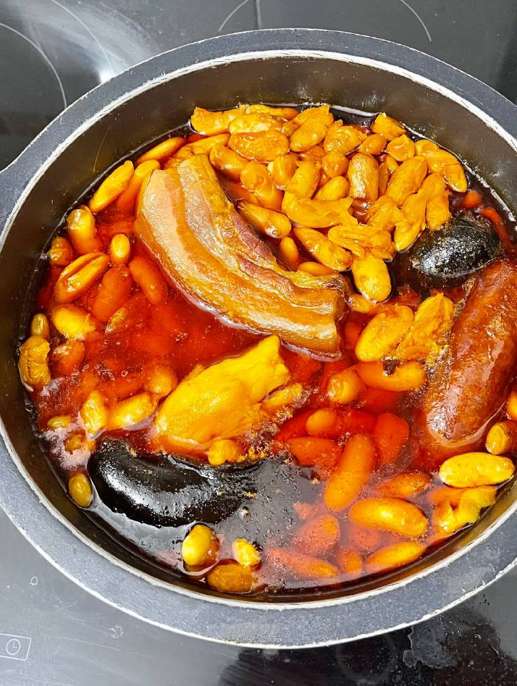

Cuisine espagnole

Cuisine espagnole
Fabada asturiana
Haricots et cochon des Asturies
Préparation : 20 min
Repos : 12 h
Cuisson : 3 h
Ingrédients (pour 4 personnes)
- 400 g de fabes (gros haricots blancs secs)
- 200 g de chorizo asturien
- 200 g de morcilla asturienne fumée
- 200 g de lacón (épaule de porc salée)
- 100 g de lard ou pancetta
- 6 filaments de safran
- sel
Quantités adaptées. Les temps de cuisson ne sont pas recalculés.
- La veille, tremper les haricots à l’eau froide, lacón et lard à part dans l’eau tiède, puis au froid.
- Couvrir les haricots de deux doigts d’eau, bouillir à découvert au moins 10 minutes, écumer.
- Ajouter lacón et lard, mijoter couvert 2 heures, en secouant la cocotte sans remuer.
- Ajouter safran, chorizo et morcilla pour au moins 15 minutes, jusqu’à tendreté, puis saler.
- Laisser reposer 30 minutes, servir les viandes à part.
D’après Spain.info, office espagnol du tourisme. Traduit et reformulé.